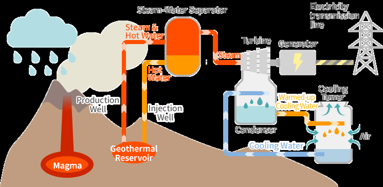
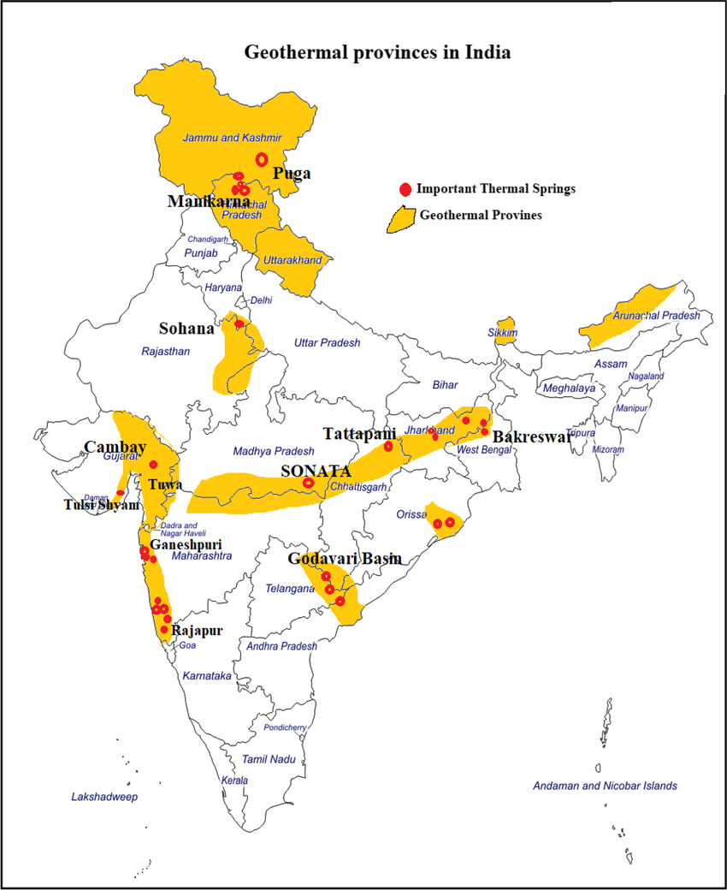
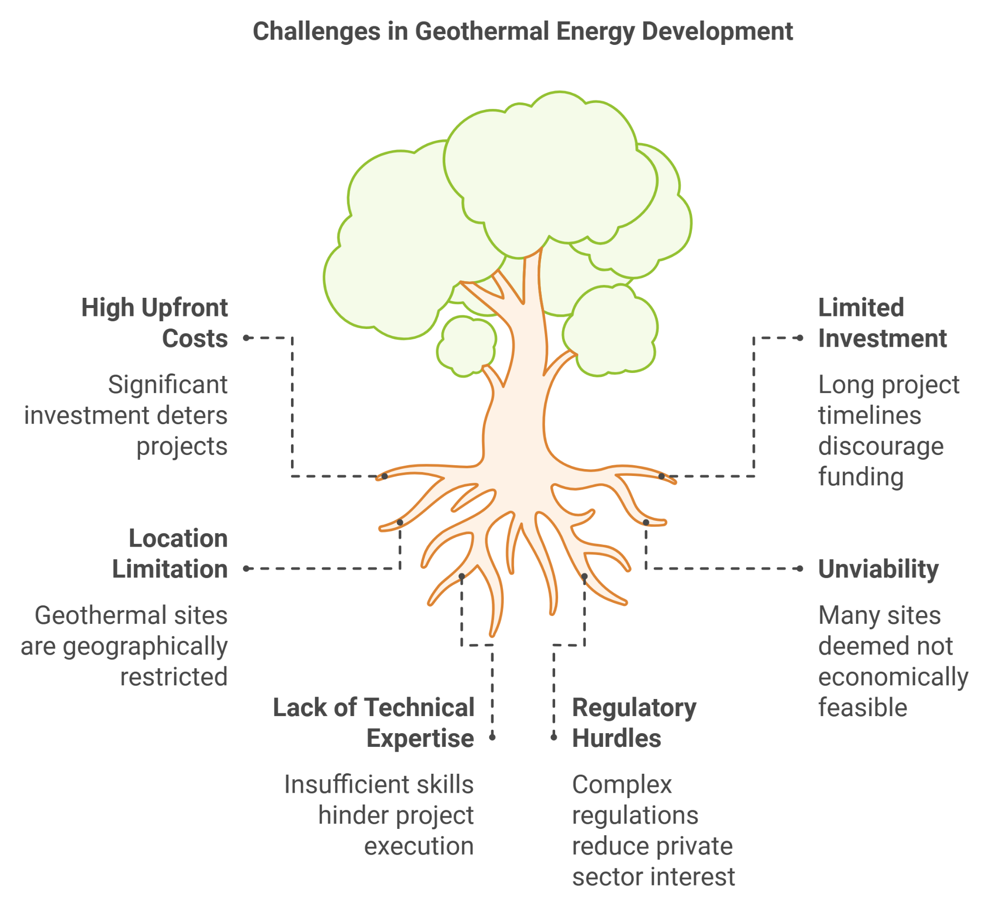
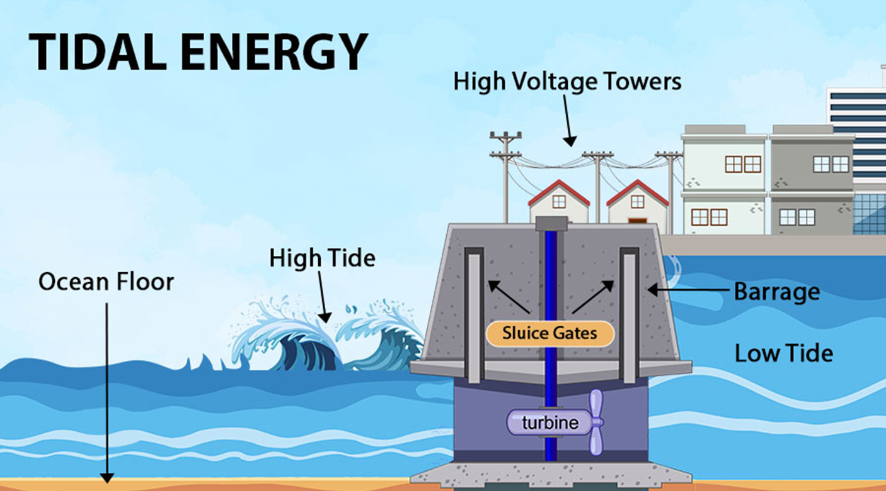
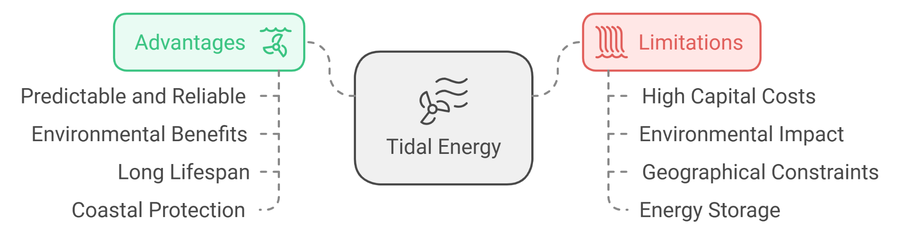

26 Geo & Tidal Energy
Geothermal Energy In India
What is Geothermal Energy?
Geothermal energy refers to the heat energy stored beneath the Earth's surface, derived from the planet’s internal heat and radioactive decay.
The term geothermal comes from the Greek words Geo (earth) and Therme
(heat).
Geothermal energy is considered renewable as the Earth's heat is continuously replenished.
Used for generating electricity and for heating applications like residential heating, spas, etc.
Geothermal energy originates from the Earth's core , powered by the formation
●
of the Earth and the decay of radioactive isotopes like potassium-40 and
thorium-232 .
Methods of Geothermal Energy Production
Dry Steam Power Plants :
Use steam from underground reservoirs to fuel turbines directly. Highly efficient, ideal for areas with naturally occurring steam.
Flash Steam Power Plants:
●
Used in geothermal reservoirs where water temperatures exceed 182°C .
Flashing steam is created by reducing pressure, which is then used to drive turbines.
Binary Cycle Power Plants:
Applied in regions with lower temperature geothermal resources (107-182°C).
Uses hot water to boil a secondary working fluid with a lower boiling point to power turbines.

Geothermal Energy in India
The Geological Survey of India (GSI) has conducted extensive exploration of geothermal energy across the country, focusing on temperature, discharge, and water quality in various geothermal fields.
In 2022, GSI published the "Geothermal Atlas of India," identifying approximately 10,600 MW of geothermal power potential.
Geothermal Hot Springs : Approximately 340 identified across the country, with
surface temperatures ranging from 37°C to 90°C, suitable for direct heating applications.
Power Generation Potential : Estimated at about 10,000 MW.
Geothermal Provinces : Hot springs are categorized into seven provinces: Himalayan,
Sahara Valley, Cambay Basin, Son-Narmada-Tapti Lineament Belt, West Coast, Godavari Basin, and Mahanadi Basin.
Prominent Locations for Power Plants:
Manikaran, Himachal Pradesh Jalgaon, Maharashtra Tapovan, Uttarakhand Bakreshwar, West Bengal Tuwa, Gujarat
Existing Plants:
Parvati Valley, Manikaran, Himachal Pradesh Puga–Chumathang geothermal sites, Ladakh

Government Initiatives to Promote Geothermal Energy
Pilot Projects:
●
Singareni Collieries Company Limited (SCCL) has commissioned a 20
○
Binary Organic Rankine Cycle Process technology.
Renewable Energy Technology Action Platform (RETAP) : Launched in
2023, focusing on geothermal energy as a key area of collaboration between India and the USA.
Global Geothermal Capacities
Leading Countries:
United States Indonesia Philippines Turkey New Zealand Mexico and Italy (both exceeding 900 MW) Kenya (over 800 MW) Iceland, Japan, and others also have notable capacities.

Tidal Energy In India
What is Tidal Energy?
Definition:
Tidal energy is the energy generated by the gravitational forces between the Earth, Moon, and Sun.
It causes the natural rise and fall of ocean tides, harnessing this movement for energy production.
Types of Energy:
●
Kinetic Energy : Energy from the movement of water as the tides rise and
fall.
Potential Energy : The energy captured from the difference in water
height between low and high tides.
Tidal Power : A form of gravitational hydropower that generates
electricity through turbines using tidal currents or waves.
Tidal Energy Power Generation

Floodgate Dams:
Built across inlets to trap water during high tide. When the tide falls, the water is released through turbines, generating electricity.
Tidal Barrages:
Large dams are constructed at the entrance of estuaries. They use the difference in water height between high and low tides to harness potential energy.
Tidal Stream Generators:
Underwater turbines are installed in areas with strong tidal currents. The movement of water turns the turbines, converting kinetic energy into electrical power.
Tidal Energy Potential in India
Geographical Features:
India has a coastline of over 7,500 km, with significant tidal ranges providing ample opportunities for tidal energy generation.
Notable Areas:
●
Gulf of Cambay (Gujarat) : Maximum tidal range of 11 meters.
○
Gulf of Kutch (Gujarat) : Maximum tidal range of 8 meters.
○
Sunderbans (West Bengal) : Suitable for smaller-scale tidal energy
generation.
Government Initiatives
Collaborations:
●
Gujarat : Agreement with Gujarat Power Corporation Limited (GPCL),
Atlantis Resource Corporation (UK), and Power Monitoring Expert Systems (Singapore) to develop a 250 MW tidal power plant in the Gulf of Kutch.
Sunderbans : A 3.75 MW tidal power project was approved in 2008 for
Durgaduani Creek but faced delays.
Ongoing Projects:
●
Mandavi (Kutch, Gujarat) : The first phase of a 50 MW tidal power plant
has commenced.
